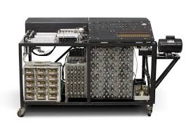

Принос
ABC Компютър
Атанасов-Барич компютър (ABC): Първият електронен компютър, създаден за решаване на системи от линейни уравнения, използващ вакуумни тръби.
Методи за цифрова обработка
Изследва методи за цифрова обработка на информация, включително аритметични операции и алгоритми.
Проект за електронен компютър
След ABC Атанасов продължава работа върху концепцията за електронни компютри, включително подобрения в аритметичните операции и управлението на паметта.